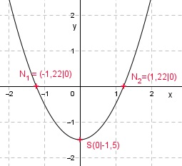

Aufgabe 8 Welche Koordinaten haben der Scheitelpunkt S und die Nullstellen N der folgenden Funktion? y = x2 - 1,5 Wertetabelle: x -2 -1 0 1 2 y 2,5 -0,5 -1,5 -0,5 2,5 Es ist eine nach oben geöffnete Normalparabel (Zahl vor dem x2 ist positiv und gleich 1). Sie ist symmetrisch zur y-Achse und hat ihren Scheitelpunkt, den tiefsten Punkt, bei S(0|-1,5).  Da der Scheitelpunkt unterhalb der x-Achse liegt und die Parabel nach oben geöffnet ist, hat sie Nullstellen (Schnittpunkte mit der x-Achse). Nullstellen. (y = 0): 0 = x2 - 1,5 |+1,5 x2 = 1,5 |√ x1,2 = ± = ± 1,22